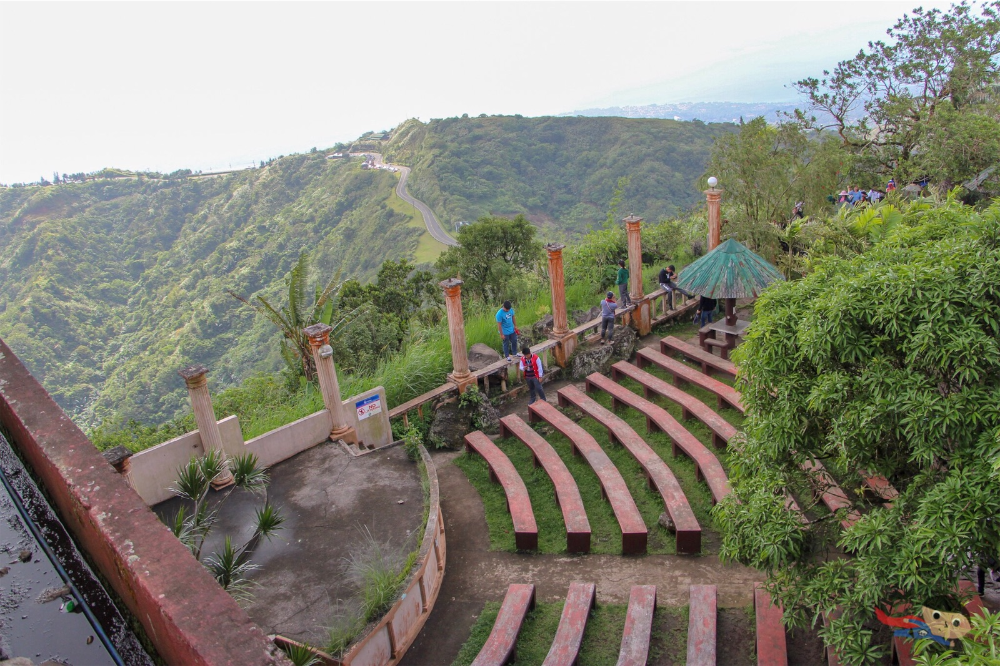
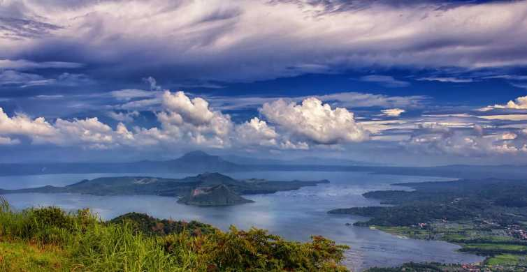
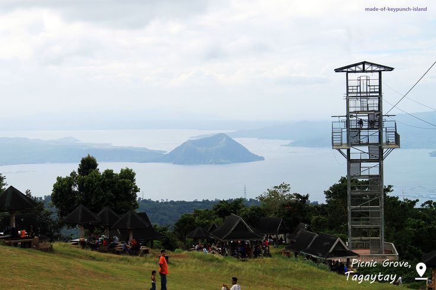
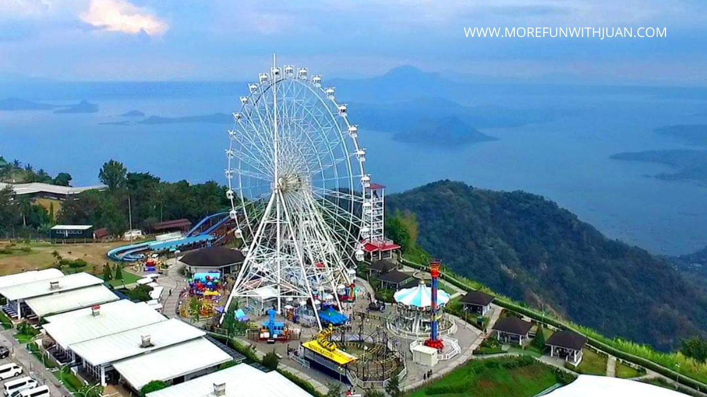
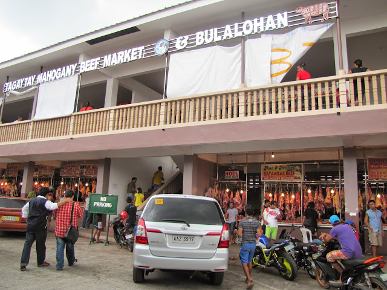
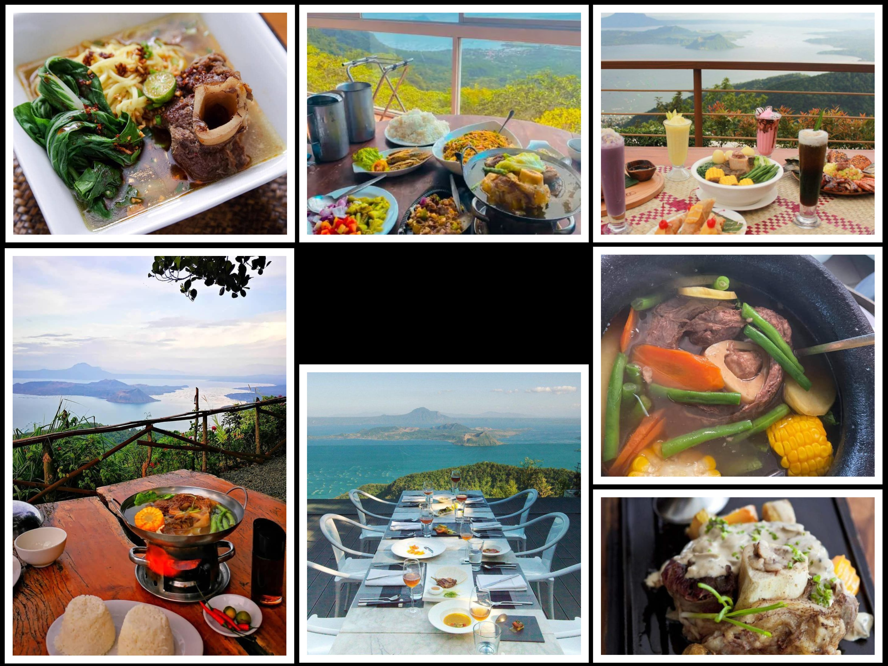

People’s Park in the Sky, simply called “People’s Park” by locals, is an unfinished mansion built in 1981 on top of a mountain. It was commissioned by the Marcos administration to host the visiting US President Ronald Reagan, hence the former name Palace in the Sky. But the supposed visit in 1983 was canceled and the construction was halted.

View of Taal Volcano
Tagaytay’s biggest asset is perspective. Part of what makes it special is not what’s within its territory but what one can admire from there — the Taal Lake and the picturesque but temperamental volcano at its center.
Unbeknownst to many, what we now call Taal Lake is actually the caldera of a massive ancient volcano. But don’t panic, only the tiny island in the middle of the lake remains active. But this geological history explains a lot about Tagaytay, especially its location, geography, and topography.
Tagaytay is perched on the edge of this caldera, giving it the front seat when it comes to Taal Volcano vistas. And what a difference a view makes! For many years, this priceless view has provided an aesthetic advantage for commercial establishments like restaurants and hotels in Tagaytay and considerably helped propel the city’s economy.

If you are staying in Tagaytay for a night and want easy visual access to this stunning natural backdrop throughout your stay, here are some of the hotels with a great view. But note the this spectacular view ramps up the prices of rooms facing it.
Picnic Grove
Tagaytay Picnic Grove is one of the places where you can rent tables, gazebos, or huts. There are also provisions if you want to cook and grill but you can bring your own griller and portable burner too. Some spots are blessed with the view of Taal Lake, while others are under the shade of trees.
Aside from the picnic areas, it also features an eco-trail, horseback riding circuit, an open field for flying kite or playing badminton and the likes, zipline, souvenir shops, and food stalls. There are relatively new structures within the picnic grove — multi-level parking space, new observation deck, Sky Walk, and business spaces. Some facilities still need upgrades, but many areas have been improved. If it’s been a long time since you were last here, it might be time for a comeback.
Opening Hours: 6:00AM-10:00PM (Daily). The schedule may change without prior notice. Please check the official site or FB page for schedule updates.
Getting There: From Olivarez/Rotonda, ride a jeepney bound for Calamba or the one with the signage “People’s Park”. If you want to make sure, just ask the driver to drop you off at Tagaytay Picnic Grove. The fare is around P10.
Zipline
An exhilarating way of viewing and experiencing the lush surroundings of Tagaytay is by zipline!

If it’s your first time riding a zipline, this is a good introduction because the ziplines in Tagaytay are not outrageously terrifying — not too high and not too long. Sky Ranch and Tagaytay Picnic Grove both offer zipline experiences.
The one in Sky Ranch is easy to spot, while the one in Tagaytay Picnic Grove is located at the Picnic Town. The rates range from P200 to P500, depending on the type and the day. Weekday rates are cheaper.
Sky Ranch Tagaytay
This five-hectare leisure park caters to both kids and kids-at-heart. It features exciting rides and games, restaurants and food stalls, and activities like horseback riding. The park also provides good spots to view the Taal Volcano and spaces for corporate events, receptions for all occasions, and other social gatherings.

The most prominent structure is the 63-meter tall Sky Eye, a Ferris wheel with 32 gondolas.
Opening Hours: 10:00 AM-8:00 PM (Monday – Friday); 8:00AM-9:00PM (Saturday – Sunday, Holidays). Depending on the current restrictions and protocols, the schedule may change without prior notice. Please check the official site or FB page for schedule updates.
Getting There: From Manila, take the bus to Tagaytay and alight at Olivarez/Rotonda. From Olivarez/Rotonda, take a jeepney bound for Mendez or Nasugbu. Let the driver know that you are going to Sky Ranch, so he can drop you off at the designated stop because not all jeepneys take the road where Sky Ranch is located. The fare is around P15.
Mahogany Market
One of the most popular bulaluhan places is the one located on the second floor of the Mahogany Market. Think of it as a food court, but all the stalls serve bulalo (along with a few other dishes). One brisk walk along the stalls and it’s not hard to notice they have almost identical menu at identical prices. Just choose a spot to sit and order from the designated stall.

What’s on the ground floor of the market? Fresh, raw meat! Beef is, of course, the bestseller, but you’ll find other proteins like pork, chicken, seafood, and carabao beef (water buffalo), too.
The market complex has other buildings housing different products like farm produce (fruits and vegetables), dried seafood, and plants.
Opening Hours: 7:00AM-8:00PM (Daily). The schedule may change without prior notice.
Parking Fee: P20-40 (depending on the location)
Getting There: From Manila, take a bus bound for Tagaytay or Nasugbu at Parañaque Integrated Terminal Exchange (PITX). Get off at Tagaytay Hall of Justice along Mahogany Avenue. Walk towards Mahogany Market behind the Tagaytay Hall of Justice building.
Bulalo Restaurants
When we think of Tagaytay, more often than not, the next image that pops into our heads is that of steaming hot bulalo, complimenting the chilly vibe of the city. The culinary map of Tagaytay is dotted with bulaluhan, sometimes clustered in one area or lining the sides of the road.
One of these is Bulalo Capital, boasting about 30 recipes of Bulalo including its signature Dragon Bulalo, Kimchi Bulalo, Bulalong Tagaytay, and Sizzling Bulalo. It also has amazing photo spots installed around the site, keeping you busy while waiting for your order.

Other favorites of our teams are Cabanas Dine and Bar and Ridge Park Kainan sa Kubo, which both take pride in their own bulalo recipes.